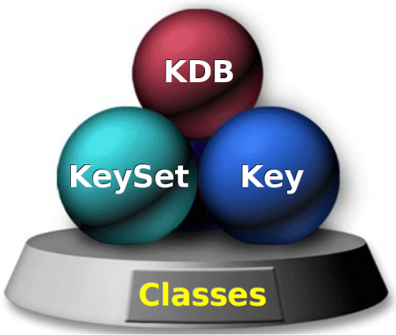

|
Elektra 0.11.0
|
|
Elektra 0.11.0
|
Elektra serves as a universal and secure framework to access configuration parameters in a global, hierarchical key database and provides a mature, consistent and easily comprehensible API. Its modularity effectively avoids code duplication across applications and tools regarding configuration tasks. Elektra abstracts from cross-platform-related issues and allows applications to be aware of other applications' configurations, leveraging easy application integration.
See the readme for more introduction. See the glossary for the used terminology.
This document's main goal is to describe the API. It covers:
On the one hand it gives an overview and an introduction for developers using Elektra, on the other hand it gives an informal description what methods must and may provide to allow an alternative implementation of the API.
The latest released version (for stable releases) of this document can be found at https://doc.libelektra.org/api/latest/html
The Git master version of this document can be found at https://doc.libelektra.org/api/master/html
Important: On GitHub links to API functions are broken, so it is recommended that you continue reading in one of these links above.
A C or C++ source file that wants to use Elektra should include:
To link an executable with the Elektra library, one way is to use the pkg-config tool:
Another way is to use CMake:
Read about compiling elektra.
List of all available Plugins and get started by developing your own plugins Plugins.
The API was written in pure C because Elektra was designed to be useful even for the most basic system programs.
The API follows an object-oriented design, and there are 3 main classes as shown by the figure:

Some general things you can do with each class are:
More background information about the classes
There are 5 trees (=namespaces) of keys: spec, proc, dir, user and system that are all unified (in the given order) in one cascading tree starting with /.
The cascading tree is the logical tree to be used in applications. The other trees are the physical ones that stem from configuration sources. When using cascading key the best key will be searched at run-time, which appears like a tree on its own. See cascading in the documentation of ksLookupByName() on how the selection of keys works.
The spec tree
This tree specifies how the lookup should take place and also allows us to define defaults or document a key. The metadata of a key contains this information:
override/#: use these keys in favor of the key itself (note that # is the syntax for arrays, e.g. #0 for the first element, #10 for the 11th and so on)namespace/#: instead of using all namespaces in the predefined order, one can specify which namespaces should be searched in which orderfallback/#: when no key was found in any of the (specified) namespaces the fallback-keys will be searcheddefault: this value will be used if nothing else was foundThe proc tree
Is the only read-only tree. The configuration does not stem from the KDB (Key Database), but any other source, e.g. command-line arguments or environment.
The dir tree
Allows us to have a per-directory overwrite of configuration files, e.g. for project specific settings.
The user tree
Used to store user-specific configurations, like the personal settings of a user to certain programs. The user subtree will always be favored if present (except for security concerns the user subtree may not be considered).
The system tree
It is provided to store system-wide configuration keys, that is, the last fallback for applications but the only resort for daemons and system services.
Read more about namespaces and a tutorial for namespaces.
When using Elektra to store your application's configuration and state, please keep in mind the following rules:
/sw/org/myapp/#0/current#0 is the major version of the configuration/sw/org/myapp/#0/profile and then ksLookupByName() in /sw/org/myapp/#0/profile/key where profile is from command-line arguments and defaults to current.Read more about key names
The core of Elektra does not store configuration itself to the hard disk. Instead this work is delegated to backends.
If you want to develop a backend, you should already have some experience with Elektra from the user point of view. You should be familiar with the data structures: Key and KeySet Then you can start reading about Backends that are composed out of Plugins. To get started with writing plugins, first read our plugin tutorial and then lookup details in the API description in Plugins.
Read more about mounting